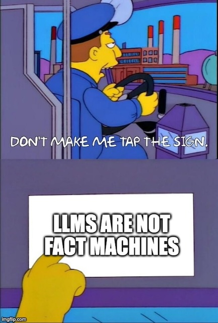
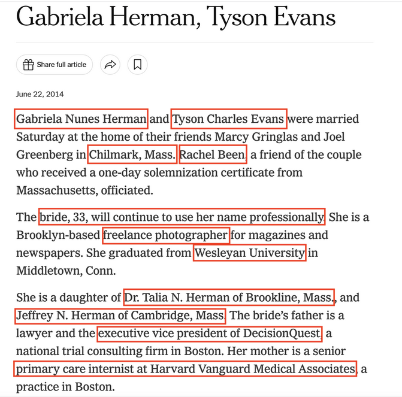

25 AI and Data Journalism
The first thing to know about the large language models that have attracted so much attention, money and coverage is this: they are not fact machines.
But they are - mostly - very useful for people who write code and for those trying to work through complex problems. That’s you. At its core, what a large language model does is predict the next word in a phrase or sentence. They are probabilistic prediction machines based on a huge set of training data. This chapter goes through some tasks and examples using LLMs.
25.1 Setup
We’ll be using a service called Groq for the examples here. You should sign up for a free account and create an API key. Make sure you copy that key. We’ll also need to install an R package to handle the responses:
install.packages("devtools")
devtools::install_github("heurekalabsco/axolotr")Then we can load that library and, using your API key, setup your credentials:
library(axolotr)
create_credentials(GROQ_API_KEY = "YOUR API KEY HERE")Credentials updated successfully. Please restart your R session for changes to take effect.See that “Please restart your R session for changes to take effect.”? Go ahead and do that; you’ll need to rerun the library() function above.
Let’s make sure that worked. We’ll be using the Llama 3.1 model released by Meta.
groq_response <- axolotr::ask(
prompt = "Give me five names for a pet lemur",
model = "llama-3.1-8b-instant"
)
groq_response[1] "Here are five name suggestions for a pet lemur:\n\n1. **Loki**: a playful and mischievous name fitting for a curious and energetic lemur.\n2. **Fiji**: a nod to the lemur's tropical origins, evoking the islands of the Pacific.\n3. **Zuzu**: a whimsical and charming name that suits a lively and affectionate lemur.\n4. **Mango**: a sweet and fruity name that matches the lemur's bright and cheerful personality.\n5. **Jinx**: a fun and quirky name that captures the lemur's playful and unpredictable nature.\n\nI hope these suggestions inspire you!"I guess you’re getting a lemur?
25.2 Three Uses of AI in Data Journalism
There are at least three good uses of AI in data journalism:
- turning unstructured information into data
- helping with code debugging and explanation
- brainstorming about strategies for data analysis and visualization
If you’ve tried to use a large language model to actually do data analysis, it can work, but often the results can be frustrating. Think of AI as a potentially useful assistant for the work you’re doing. If you have a clear idea of the question you want to ask or the direction you want to go, they can help. If you don’t have a clear idea or question, they probably will be less helpful. Let’s go over a quick example of each use.
25.2.1 Turning Unstructured Information into Data
News organizations are sitting on a trove of valuable raw materials - the words, images, audio and video that they produce every day. We can (hopefully) search it, but search doesn’t always deliver meaning, let alone elevate patterns. For that, often it helps to turn that information into structured data. Let’s look at an example involving my friend Tyson Evans, who recently celebrated his 10th wedding anniversary. You can read about his wedding in The New York Times.
This announcement is a story, but it’s also data - or it should be.

What if we could extract those highlighted portions of the text into, say, a CSV file? That’s something that LLMs are pretty good at. Let’s give it a shot using the full text of that announcement:
text = "Gabriela Nunes Herman and Tyson Charles Evans were married Saturday at the home of their friends Marcy Gringlas and Joel Greenberg in Chilmark, Mass. Rachel Been, a friend of the couple who received a one-day solemnization certificate from Massachusetts, officiated. The bride, 33, will continue to use her name professionally. She is a Brooklyn-based freelance photographer for magazines and newspapers. She graduated from Wesleyan University in Middletown, Conn. She is a daughter of Dr. Talia N. Herman of Brookline, Mass., and Jeffrey N. Herman of Cambridge, Mass. The bride’s father is a lawyer and the executive vice president of DecisionQuest, a national trial consulting firm in Boston. Her mother is a senior primary care internist at Harvard Vanguard Medical Associates, a practice in Boston. The groom, 31, is a deputy editor of interactive news at The New York Times and an adjunct professor at the Columbia University Graduate School of Journalism. He graduated from the University of California, Los Angeles. He is the son of Carmen K. Evans of Climax Springs, Mo., and Frank J. Evans of St. Joseph, Mo. The groom’s father retired as the president of UPCO, a national retailer of pet supplies in St. Joseph."
evans_response <- axolotr::ask(
prompt = paste("Given the following text, extract information into a CSV file with the following structure with no yapping: celebrant1,celebrant2,location,officiant,celebrant1_age,celebrant2_age,celebrant1_parent1,celebrant1_parent2,celebrant2_parent1,celebrant2_parent2", text),
model = "llama-3.1-8b-instant"
)
evans_response[1] "Here is the extracted information in a CSV file:\n\nGabriela Nunes Herman,Tyson Charles Evans,Chilmark, Mass.,Rachel Been,33,31,Dr. Talia N. Herman,Jeffrey N. Herman,Carmen K. Evans,Frank J. Evans"A brief word about that “no yapping” bit; it’s a way to tell your friendly LLM to cut down on the chattiness in its response. What we care about is the data, not the narrative. And look at the results: without even providing an example or saying that the text described a wedding, the LLM did a solid job. Now imagine if you could do this with hundreds or thousands of similar announcements. You’ve just built a database.
25.2.2 Helping with Code Debugging and Explanation
When you’re writing code and run into error messages, you should read them. But if they do not make sense to you, you can ask an LLM to do some translation, which is another great use case for AI. As with any debugging exercise, you should provide some context, things like “Using R and the tidyverse …” and describing what you’re trying to do, but you also can ask LLMs to explain an error message in a different way. Here’s an example:
debug_response <- axolotr::ask(
prompt = "Explain the following R error message using brief, simple language and suggest a single fix. I am using the tidyverse library: could not find function '|>'",
model = "llama-3.1-8b-instant"
)
debug_response[1] "**Error Message:** \"could not find function '|>'\"\n\n**Explanation:** The error message indicates that R is unable to find the pipe operator (`|>`) function, which is a part of the magrittr package. This package is included in the tidyverse library, but it seems that it's not loaded or attached in your current R session.\n\n**Fix:** Load the magrittr package by adding the following line of code at the beginning of your script:\n```r\nlibrary(magrittr)\n```\nAlternatively, you can also load the tidyverse library, which includes magrittr, and then use the pipe operator:\n```r\nlibrary(tidyverse)\n```\nThis should resolve the issue and allow you to use the pipe operator (`|>`) in your code."The trouble is that if you run that several times, it will give you slightly different answers. Not fact machines. But you should be able to try some of the suggested solutions and see if any of them work. An even better use could be to pass in working code that you’re not fully understanding and ask the LLM to explain it to you.
25.2.3 Brainstorming about Strategies for Data Analysis and Visualization
Let’s say that you have some data that you want to interview, but aren’t sure how to proceed. LLMs can provide some direction, but you may not want to follow their directions exactly. You shouldn’t accept their judgments uncritically; you’ll still need to think for yourself. Here’s an example of how that might go:
idea_response <- axolotr::ask(
prompt = "I have a CSV file of daily data on campus police incidents, including the type of incident, building location and time. Using R and the tidyverse, suggest some ways that I could find patterns in the data. Use the new-style pipe operator (|>) in any code examples",
model = "llama-3.1-8b-instant"
)
idea_response[1] "Here are some ways you could find patterns in your campus police incident data using R and the tidyverse:\n\n**1. Explore the distribution of incidents by type**\n\n```r\nlibrary(readr)\nlibrary(tidyverse)\n\nincidents <- read_csv(\"incidents.csv\")\n\nincidents |>\n group_by(type) |>\n summarise(count = n()) |>\n arrange(desc(count))\n```\n\nThis code will show you the most common types of incidents on campus.\n\n**2. Identify the most incident-prone buildings**\n\n```r\nincidents |>\n group_by(building) |>\n summarise(count = n()) |>\n arrange(desc(count))\n```\n\nThis code will show you which buildings have the most incidents.\n\n**3. Visualize the distribution of incidents by time of day**\n\n```r\nincidents |>\n ggplot(aes(x = hour)) +\n geom_bar() +\n labs(x = \"Time of Day\", y = \"Number of Incidents\")\n```\n\nThis code will create a bar chart showing the number of incidents by hour of the day.\n\n**4. Identify patterns in incident frequency by day of the week**\n\n```r\nincidents |>\n mutate(day_of_week = factor(wday, labels = c(\"Monday\", \"Tuesday\", \"Wednesday\", \"Thursday\", \"Friday\", \"Saturday\", \"Sunday\"))) |>\n group_by(day_of_week) |>\n summarise(count = n()) |>\n arrange(desc(count))\n```\n\nThis code will show you which days of the week have the most incidents.\n\n**5. Explore the relationship between incident type and building location**\n\n```r\nincidents |>\n ggplot(aes(x = building, y = type, color = type)) +\n geom_point() +\n labs(x = \"Building\", y = \"Incident Type\", color = \"Incident Type\")\n```\n\nThis code will create a scatterplot showing the relationship between building location and incident type.\n\n**6. Identify clusters of incidents in space and time**\n\n```r\nincidents |>\n ggplot(aes(x = building, y = hour)) +\n geom_point() +\n labs(x = \"Building\", y = \"Time of Day\")\n```\n\nThis code will create a scatterplot showing the location of incidents in space and time. You can use this plot to identify clusters of incidents.\n\nThese are just a few examples of the types of patterns you could find in your data. The key is to use the tidyverse to manipulate and visualize your data in a way that helps you understand the underlying patterns."Note that the column names may not match your data; the LLM is making predictions about your data, so you could provide the column names.
25.2.4 Can’t I just ask it to do data analysis for me?
Well, you can try, but I’m not confident you’ll like the results. As this story from The Pudding makes clear, the potential for using LLMs to not just assist with but perform data analysis is real. What will make the difference is how much context you can provide and how clear your ideas and questions are. You still have to do the work.